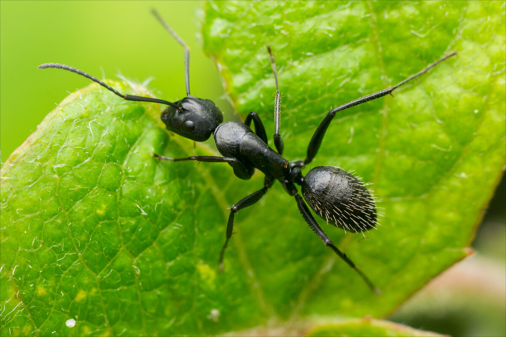
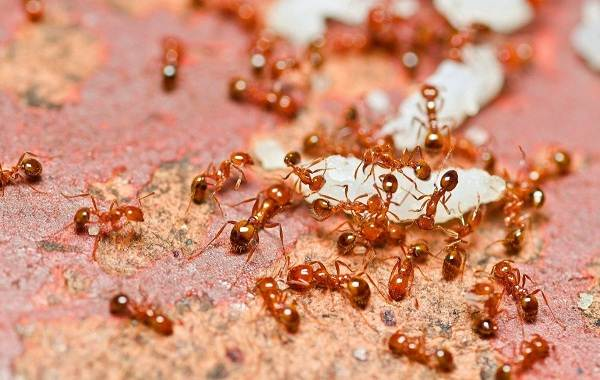
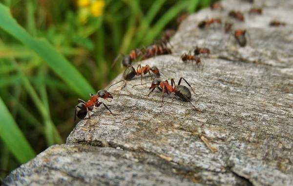
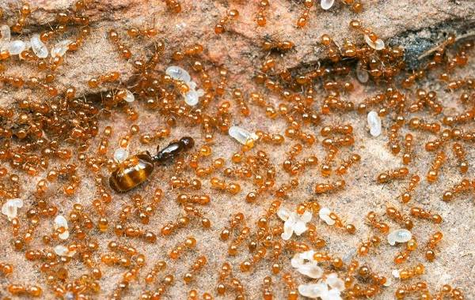
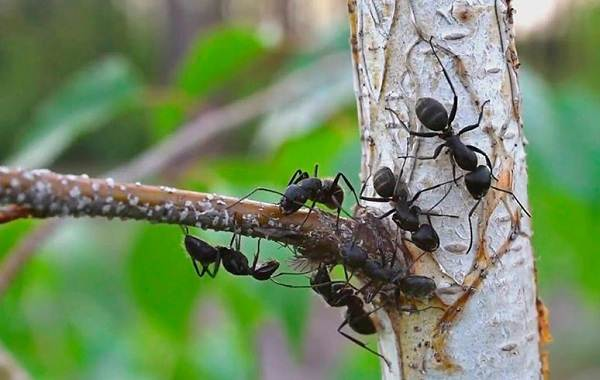
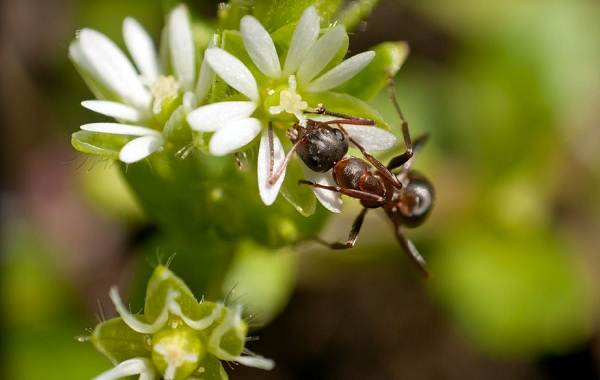
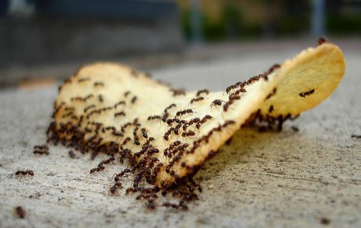
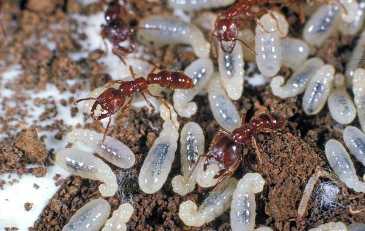
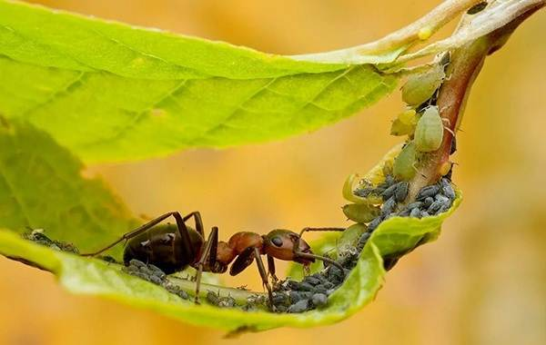
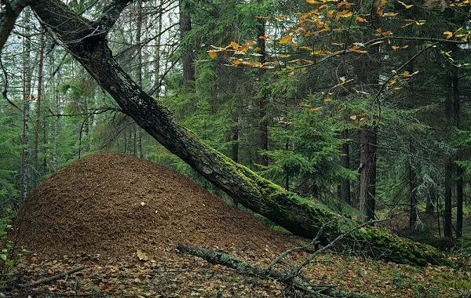

Описание и особенности
Муравей – представитель класса насекомых, типа членистоногих и семейства муравьёв. Живут эти насекомые огромными колониями с чётко определённой иерархией, включающей разделение на три группы:
- -Матки
- -Самцы
- -Рабочие муравьи
Тело их состоит из головы, туловища, трёх пар конечностей и усиков, чувствительных к внешним факторам среды,ароматам и воздушным потокам, фактически они выполняют функцию осязательных органов. На лапках имеются крючочки для удобного сцепления с поверхностью.
Размер тела варьируется от 0,4 до 1,3 см в зависимости от вида. Матка обычно самая крупная особь, однако может быть и равной другим представителям общины. От разновидности зависит и цвет: красный, чёрный, зелёный и т.д.

Виды муравьев
Классификацию муравьёв затрудняет схожесть некоторых видов между собой, появление гибридов и разновидностей-двойников. С течением эволюции происходит отмирание некоторых родов и перерасселение выживших, которые вынуждены подстраиваться под изменение климата и привычной среды обитания. Наиболее многочисленные виды муравьёв:
-
Рыжие муравьи. Название получили из-за рыжеватого цвета брюшка самок, у самцов же тельце чёрное с коричневатым отливом лапок. Рядовые особи этого вида небольшие – до 5 мм, матки могут достигать 7 мм.
Распространены рыжие муравьи в европейских странах, на Дальнем Востоке, в Сибири и на Урале, предпочитают хвойные и смешанные леса, в которых исполняют роль защитников, истребляя вредителей.
Обычно представители типа селятся под большими камнями или упавшими деревьями, однако способны построить муравейник высотой до 2 метров со сложной системой ходов и многочисленными выходами.

-
Малые лесные муравьи. Разновидность красно-бурых насекомых с чёрным брюшком занесена в Красную книгу многих европейских государств, где является исчезающей. Распространены малые лесные муравьи преимущественно в хвойных лесах России, Швеции, Германии и т.д. Несмотря на название рода, его представители достигают в размерах 14 мм и способны построить жилище из опавшей хвои высотой около 2,5 метров.

-
Фараоновы муравьи. Разновидность, получившая название по месту появления – в Египте, расселилась по всему миру. Особи одни из самых мелких в классе и различаются по цвету в зависимости от роли в общине: коричневато-жёлтые самки достигают 4,5 мм, чёрные самцы – до 3,5 мм, а рядовые рабочие – 2 мм.
Примечательно, что у самцов этого вида присутствуют крылья, а вот у самок они вырастают только в период спаривания, после его окончания их откусывают муравьи-рабочие. Обитают фараоновы муравьи в человеческом жилище и способны выстроить муравейник практически в любом месте – от фундамента дома до бытовой техники.

-
Садовые муравьи. Пожалуй, наиболее многочисленный вид, расселившийся по территории России, Португалии и Великобритании. Цвет тельца, покрытого микроскопическими волосками, может быть как чёрным, так и тёмно-коричневым, а вот размер варьируется в зависимости от социальной роли: матки достигают 10 мм, самцы – 6, рабочие особи самые мелкие – до 5 мм.
Излюбленные места для постройки дома – старые пни и поваленные деревья. Питается этот вид продуктами жизнедеятельности тли, поэтому там, где есть эти вредители, можно обнаружить множество небольших муравейников высотой до 30 см.
Особенность чёрных садовых муравьёв – продолжительность жизни матки: она способна к размножению в течение почти трёх десятков лет.

-
Муравьи-древоточцы. Расселены в лесостепных зонах России и стран западной Европы. Для постройки жилища предпочитают кору деревьев, в которой проделывают множество ходов, чем наносят урон лесопосадкам, могут селиться в трухлявых пнях или деревянных постройках. Разновидность представляют красные муравьи с буроватым оттенком тельца, достигающие 10 мм в длину.
-
Муравьи-гиганты. Местом обитания насекомых с ярко-чёрным тельцем, достигающих 33 мм в размере, стали влажные леса Южной Америки. Разновидность, помимо внушительных габаритов, интересна отсутствием маток, роль которых в период спаривания берут на себя рабочие муравьи женского пола. Самцы крупнее самок и имеют постоянные крылья. Гигантские насекомые – подземные жители, их муравейники расположены на глубине 40 см и предназначены для немногочисленной семьи в 30-40 особей.
Образ жизни и среда обитания
Благодаря многочисленности вида, жизнь муравьёв оказывает влияние на биогенез. Создавая муравейники, они активно рыхлят почву, насыщая корни растений воздухом и влагой. Внутри домов тёплая и влажная атмосфера, в которой активно размножаются бактерии, перерабатывающие продукты жизнедеятельности и экскременты. Тем самым насекомые помогают насытить почву питательными веществами.
Муравей – насекомое общественное, устройство их общин похоже на людские, характеризуется чёткой структурой, в которой распределение ролей имеет жизненно важную роль. У некоторых видов, помимо трёх основных каст, есть дополнительная – солдаты, они выполняют функцию защитников муравейника, за это рабочие обеспечивают их пропитанием.
Особая разновидность насекомых – огненные муравьи-рабовладельцы подчиняют себе представителей более слабых семейств и паразитируют за их счёт. В любом случае муравейник представляет собой единый организм, без которого отдельные особи выжить не способны.
Муравьи расселились по всем континентам и климатическим зонам за исключением пустынь, Антарктиды и холодных островов Атлантического и Северного Ледовитого океанов. Каждый вид имеет свой ареал обитания, однако муравьи способны перемещаться даже между странами и континентами, образовывая новые колонии там, где раньше не были расселены.

При этом более сильные разновидности способны вытеснять слабые с привычных им мест. Жизнь в тёплом климате позволяет насекомым достигать внушительных для семейства размеров и круглогодично продолжать жизнедеятельность, муравьи в умеренном и холодном поясе значительно меньше и на зимний период времени впадают в спячку.
Большинство видов организовывают свои жилища в виде муравейников, это могут быть земляные жилища, поселения в коре деревьев или трухлявых пнях, особые разновидности способны захватывать гнёзда птиц и селиться в них.
Питание
Муравьи относятся к тем насекомым, которые могут употреблять в пищу всё, что находят. Основное отличие их рациона – отсутствие жиров. В зависимости от возраста меняются потребности: личинкам для гармоничного развития необходим белок, который они получают от беспозвоночных: гусениц, бабочек, червей.
Способны муравьи и атаковать мелких животных, если они слабы или ранены, не брезгуют падалью. Муравей на фото тащит в жилище гусеницу, чьи размеры больше его собственных.

Взрослым особям, особенно рабочим, нужны углеводы, дающие энергию. Большое их количество содержится в медвяной росе, выделяемой растениями, и пади, являющейся продуктом жизнедеятельности мелких насекомых, например, тли.
Садовые муравьи в пище неразборчивы и поедают как сладкие ягоды, так и мелких насекомых. Древоточцы едят труху пней, в которых живут. Переваривать её помогает особая кишечная бактерия, характерная для этого вида.
Известны и муравьи–каннибалы, которые питаются более слабыми особями своего вида или высасывают часть питательных веществ из личинок, не нанося им вреда. Домашние насекомые, которые селятся рядом с человеком, употребляют в пищу всё, что оставляет человек: от крупинок сахара до растительного масла.
Размножение и продолжительность жизни
Продолжительности жизни муравьёв зависит от их вида и социального слоя, к которому они принадлежат. У большинства семейств роли распределены с момента рождения, у некоторых – меняются с течением времени. Важен и размер особей: чем они больше, тем дольше способны прожить. Самка обычно выживает и остаётся способной к размножению гораздо дольше самцов и муравьёв-рабочих.
Наименьшая продолжительность жизни у фараоновых муравьёв: самцы живут не более 20 дней, рабочие – до 2 месяцев, самки – до 9 месяцев. Долгожителями признаны тропические виды, их матка способна дожить до 30 лет, а рабочие особи до 6. Размножаются муравьи несколько раз в течение года двумя разными способами:
- -Матка вместе с несколькими десятками рабочих муравьёв формирует отдельное жилище, отделяясь от основой семьи.
- -Самка оплодотворяется самцами из другого муравейника, перелетая на временно вырастающих крыльях.
В любом случае матка откладывает яйца, часть из которых остаётся неоплодотворёнными. Из них появляются самцы, если яйцо оплодотворено, оно даст жизнь другим самкам и рабочим муравьям. На фото матка и несколько рабочих, заботящихся о личинках.

Польза и вред муравьёв
Польза и вред от насекомых зависит от того, насколько многочисленная их семья и где они обитают: на приусадебном участке или в лесном массиве. Садовые муравьи способствуют обогащению почвы кислородом, поскольку прорывают свои ходы в верхних слоях почвы.
Перегной и остатки органических отходов, перенесённые муравьями в жилища, со временем разлагаются, насыщая почву минеральными веществами и делая её более плодородной. Насекомые являются и опылителями растений: добывая нектар для пропитания, они переносят пыльцу на брюшках.
К сожалению, муравьи способствуют размножению тли, поскольку питаются продуктами её жизнедеятельности, поэтому там, где много этих насекомых, вольготно живётся и тле, приносящей огромный вред урожаю.
Вместе с тем они способны истребить гусениц и некоторые виды бабочек-вредителей. Если муравьи заводятся в человеческом жилище, они приносят не только дискомфорт, но и поедают продукты, разнося инфекции и вызывая аллергические реакции.

Лесные муравьи защищают деревья от паразитов, уничтожая огромные их популяции. Кроме того, собирая секрецию некоторых насекомых, они оберегают растения от грибковых болезней. А вот древоточец способен уничтожить здоровое дерево всего за несколько недель, проделывая тоннели в его стволе.
Опасен этот вид и для садовой мебели из древесного массива, поскольку ни лакокрасочное покрытие, ни едко пахнущие средства для обработки изделий из дерева отпугнуть их не способны.
Муравьи выделяют особый секрет, называемый муравьиной кислотой, она широко используется в медицине и фармакологии, входит в состав антисептиков, средств для борьбы с развитием сахарного диабета, артрита и т.д.
При попадания в организм человека в чистом виде кислота способна вызвать сильнейший анафилактический шок, который без своевременного введения антигистаминных препаратов приводит к летальному исходу.
